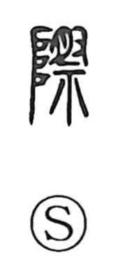

際

Kun: kiwa | On: sai, zai
edge ・ verge ・ border ・ occasion ・ limit
Explanation
際 combines 阜 with 祭. 阜 is the ladder by which a divine power ascends and descends. 祭 shows a hand presenting meat above an altar. The offering is made before the divine ladder, at the point where the god and the human worshipper come into contact.
This meeting place is also the limit to which a person can approach. 際 therefore means an edge, boundary, or furthest extent. The limit may be spatial, but it can also be the point at which two things meet.
From a place of contact, the meaning extends to a time of contact: an occasion, opportunity, or particular moment. The same character can thus name the boundary itself and the encounter that takes place there.